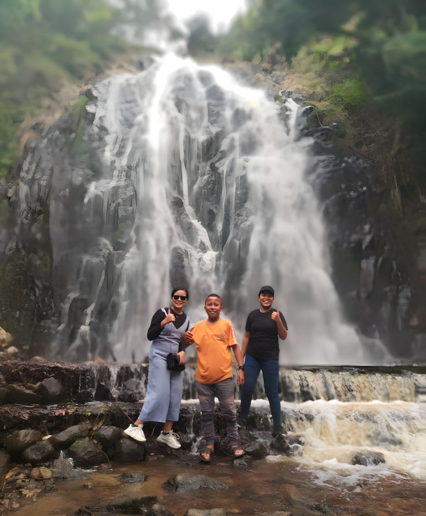

Air Terjun Efrata

Air Terjun Efrata berdekatan dengan Menara Pandang Tele Danau Toba.Oleh karena itu tak heran banyak pengunjung lokal dan mancanegara bila singgah ke Tele maupun Danau Toba,juga singgah ke air terjun tersebut.Sementara itu,air terjun Efrata dengan kawasan yang hijau diapit dengan perbukitan membuat setiap pengunjung yang datang ke sana akan terpesona dengan keindahan alamnya.
